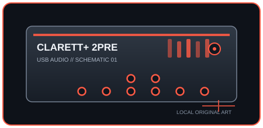

[ INDIVIDUAL COMPONENT // SOUND ]
Focusrite Clarett+ 2Pre
A bus-powered desktop USB interface with two Clarett+ microphone preamps, optical expansion, MIDI, and four line outputs.

IDENTIFICATION: Manufacturer/model: Focusrite Clarett+ 2Pre (USB model). Verify the full model and hardware/firmware revision on the unit; similarly named generations may have different ports, drivers, or channel counts.
Specifications
| Catalog subcategory | USB audio interfaces |
|---|---|
| Model / SKU identity | Focusrite Clarett+ 2Pre (USB model); model-level identity, not a retailer bundle SKU. |
| Analog, digital I/O and host channels | Up to 10-in/4-out host channels: two analog combo mic/line/instrument inputs plus optical ADAT (up to 8 channels at 44.1/48 kHz; fewer at higher rates); four balanced TRS line outputs and a headphone output. MIDI DIN I/O. |
| Conversion, sample rate and bit depth | 24-bit; 44.1, 48, 88.2, 96, 176.4, or 192 kHz. Optical channel capacity and format change with sample rate; optical is unavailable at the highest rates. |
| Mic preamps / phantom power | Two Clarett+ mic preamps on combo inputs; +48 V phantom power is switchable for microphone use. AIR mode is an input coloration option, not a substitute for gain staging. |
| USB generation / class compliance | USB-C connector carrying USB 2.0 data; class-compliant on macOS, with Windows ASIO driver required; bus-powered on supported hosts. USB-C connector shape does not imply USB 3.x transport. |
Drivers, host compatibility & latency
- Use Focusrite Control and the supported Focusrite USB driver stack on Windows; macOS uses Core Audio with Focusrite Control. macOS is class-compliant through Core Audio; Windows requires Focusrite USB ASIO drivers, while Focusrite Control supplies routing. Check the current OS support matrix before purchase.
- Focusrite driver buffer and DAW load determine software round-trip latency; select a stable buffer for the project. Hardware direct monitoring avoids the DAW round trip for live input monitoring, while ADAT channel counts depend on sample rate.
- For predictable recording, match the interface and DAW sample rates, select the model-specific manufacturer driver where required, test the intended buffer under real session load, and retain a higher-buffer fallback for dense projects.
Identification and preservation notes
Photograph the underside model label and connector panel; record serial/model identifiers, revision, firmware, included power supply, optical mode, and installed driver version. Do not infer channel count or supported sample rate from a connector or product-family name alone.
Sources & further reading
- Focusrite — Clarett+ 2Pre technical specificationsManufacturer technical specification for this Clarett+ model.
- Focusrite — Clarett+ 2Pre user guidesManufacturer manual and setup documentation, including host and routing guidance.
Manufacturer documentation is the authority for exact revisions and supported hosts. Verify regional SKU and operating-system support against the physical unit.